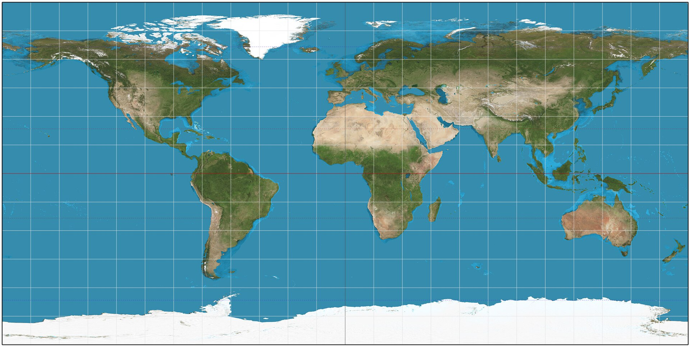

Une grande collection de créatures fascinantes des quatre coins de la planète.
Explorer les animaux ↓Clique sur un continent pour voir ses animaux, puis sur une épingle pour en rencontrer un.

Cherche un animal ou filtre par continent, puis touche « Lis-moi » ou clique une photo pour l'agrandir.